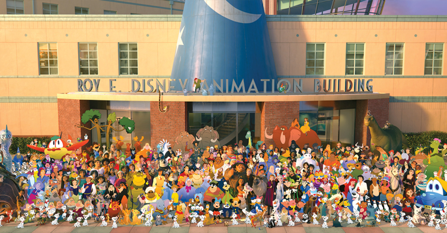

| Brasil | |
|---|---|
| Estado | Time |
| São Paulo | |
| São Paulo | |
| Santos | |
| Corinthians | |
| Palmeiras | Rio de Janeiro |
| Flamengo | |
| Botafogo | |
| Vasco | |
| Fluminense | |
| Conteúdo | Descrição da Mídia | Endereço |
|---|---|---|
|  | Esta é uma imagem incrível que eu adoro! | https://www.nit.pt/cultura/cinema/once-upon-a-time-filme-de-celebracao-dos-100-anos-da-disney-reune-543-personagens |
| Este é um áudio que eu gosto de ouvir. | https://www.youtube.com/watch?v=QtXby3twMmI&list=RDQMlZvjyxqgDNY&index=23 | |
| Este é um vídeo interessante que eu assisto sempre. | https://www.youtube.com/watch?v=nbhIgASOKao |